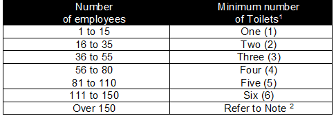
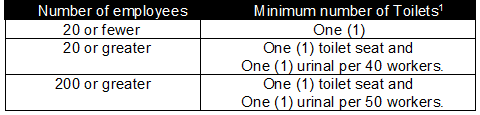

02.E.01 General. Toilets shall be present in all places of employment and shall contain the following:
▸Exception: The requirements below do not apply to mobile crews or to normally unattended work locations if employees working at these locations have transportation readily available to nearby toilet and/or washing facilities which meet the other requirements of this paragraph.
- Separate toilet facilities, in toilet rooms provided for each sex shall be provided in all places of employment according to Table 2-1. Separate toilet rooms for each sex need not be provided if toilet rooms can only be occupied by one person at a time, can be locked from the inside and contain at least one toilet seat (where such single-occupancy rooms have more than one commode, only one commode in each toilet room may be counted);
- Hot and cold running water, or tepid running water
[tepid water is 60° F - 100° F (15.5° C - 37.8° C)] ;
- Hand soap or similar cleansing agents shall be provided;
- Individual
disposable paper towels or warm air blowers designed for hand-drying , convenient to the lavatories;
- An adequate supply of toilet paper and a holder for each seat;
- Contained within an individual compartment and equipped with a door and separated from other toilet fixtures by walls or partitions sufficiently high to ensure privacy;
- Adequate interior lighting;
- Washing and toilet facilities shall be cleaned regularly and maintained in good order;
- Each commode shall be equipped with a toilet seat and toilet seat cover. Each toilet facility – except those specifically designed and designated for females - shall be equipped with a metal, plastic or porcelain urinal trough; and
- Adequate ventilation. All windows and vents shall be screened; seat boxes shall be vented to the outside [minimum vent size 4 in (10.1 cm)] with vent intake located 1 in (2.5 cm) below the seat.
02.E.02 Construction Sites. Toilet facilities on construction sites shall be provided as follows (the requirements of this subsection do not apply to mobile crews or to normally unattended work locations if employees working at these locations have transportation immediately available to nearby toilet facilities):
TABLE 2-1
Minimum Toilet Facilities
(Other Than Construction Sites)

Note: 1Where toilet facilities will not be used by women, urinals may be provided instead of commodes, except that the number of commodes in such cases shall not be reduced to fewer than 2/3 of the minimum number specified.
2 One additional toilet fixture for each additional 40 employees.
TABLE 2-2
Minimum Toilet Facilities
(Construction Sites)

Note: 1Where toilet facilities will not be used by women, urinals may be provided instead of commodes, except that the number of commodes in such cases shall not be reduced to fewer than 2/3 of the minimum number specified.
02.E.03 Employees working in temporary field conditions, in mobile crews or in normally unattended work locations shall be provided at least one toilet facility unless transportation to nearby toilet facilities is readily available.
{kind=link}
{kind=link}